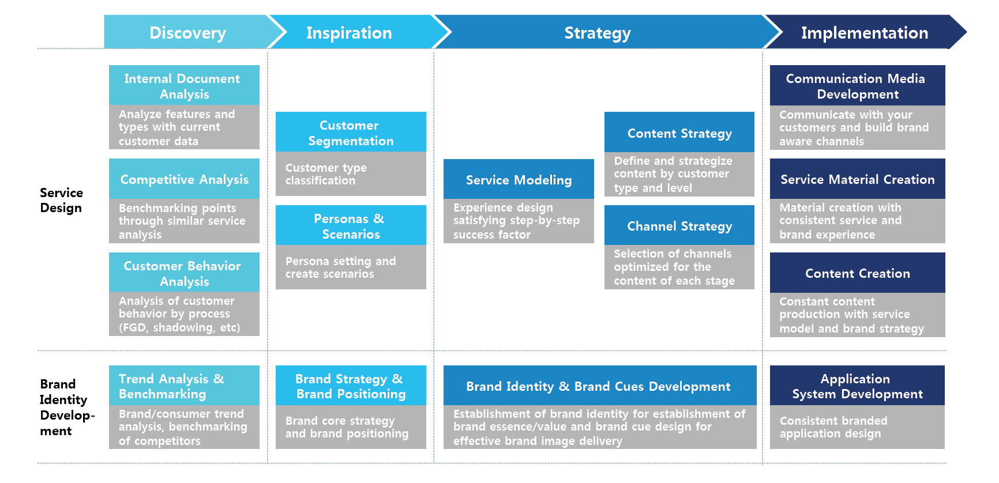
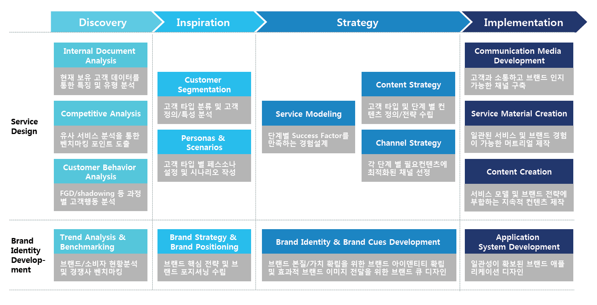
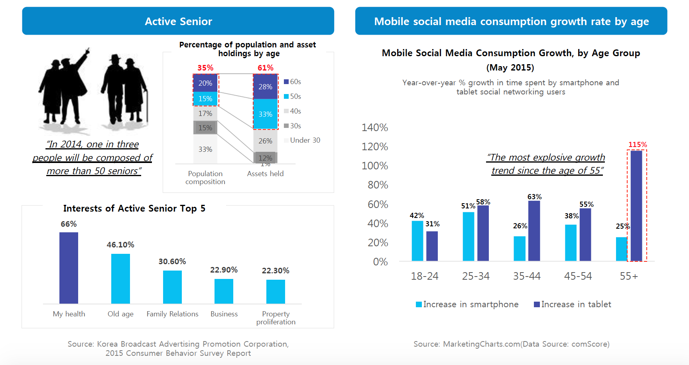
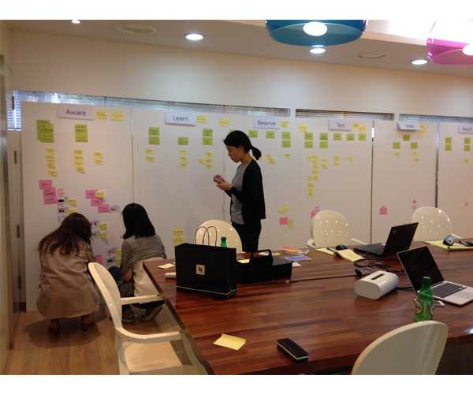
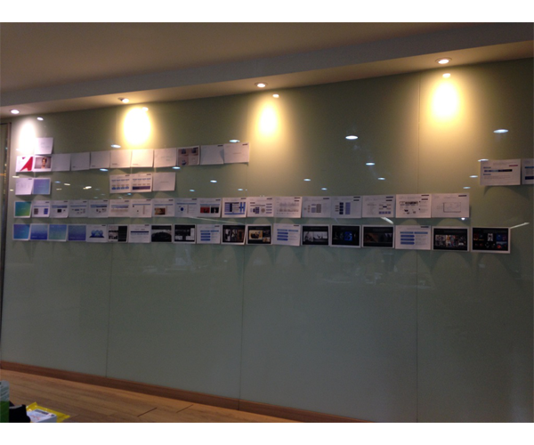

AMY LEE

Date
Aug - Dec 2016
(5 months)
Industry
Healthcare Industry
Client
BIOINFRA
(Affiliated with Seoul National University Hospital)
Problem
- As the healthcare industry, it took time and money to experience and analyze the services of competitors in the same industry.
- I had no hands-on experience with the competitors’ services in the US, so I needed to analyze the result reports that were provided only by the company.
BIOINFRA Service Modeling & Strategy
Overview
BIOINFRA Life Science has come to possess a global level of technology by uncovering biomarkers, which are the core technology of the biomedical field, and by creatively attempting the convergence of bioinformatics.
We aimed to build a global-level service that combines 'Easy, Fast and Accurate' functional aspects through service design, brand identity and channel building, and emotional aspects of 'Customer care with expertise’.
"Successful business has service that customers experience the whole service process as a product."
My Roles
- Researched consumer and healthcare industry trend
- Analyzed the company’s internal and external documents and BIOINFRA’s As-Is service experience
- Benchmarked the competitors, from big global companies and startups (23andMe, theranos, Zocdoc, Counsyl, PillPack, etc)
- Created 7 steps of customer experience journey; Aware Learn Reserve Test Wait Result Monitor
- Conducted FGDs in 4 different groups based on the customer segmentation
- Drew BIOINFRA’s To-Be service modeling and strategies, and created the detailed plan for each strategy
Work Process

Result
- Service Design : Designed customer experience journey (CXJ) and derived success factors from each step
- Brand Identity Development : Created a distinctive and sustainable brand identity
- Channel Development : Established optimized contents and channels for each stage of BIOINFRA service

[Analysis of AS-IS BIOINFRA Service]

[Desk Research]
+ Moments

